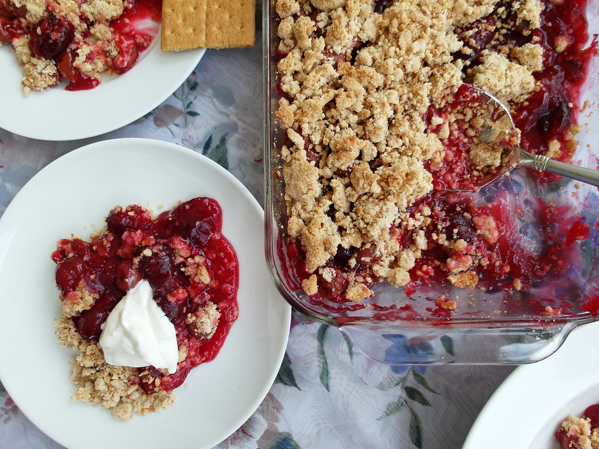

Breakfasts
Lunches
Dinners
Desserts
Cherry Cobbler

A quick and delicious dessert that will make everyone happy. Great for the last minute cravings!
Ingredients
- Canned cherries
- Yellow Cake Mix
- Butter
Preparation
- Preheat oven to 350
- Grease cake pan with shortening and flour
- Dump canned cherries in pan and spread evenly
- Melt entire stick of butter in microwave
- Mix butter with cake mix
- Dump cake mix with butter on top of cherries and spread evenly
- Cook in oven for time designated on cake mix box